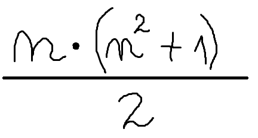
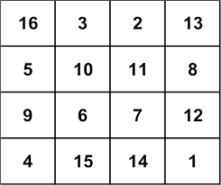

Un pătrat magic este un pătrat împărțit în `n` pătrățele mici egale, fiecare pătrățel reprezentând un număr de la 1 la n.
Proprietățile acestui pătrat sunt:
Suma magică se poate calcula cu formula de mai jos:

Un exemplu de pătrat magic:

hello. im still working on this site.
i made it using github sites
wanna see my profile on github?